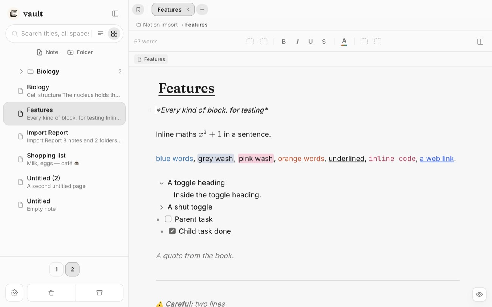
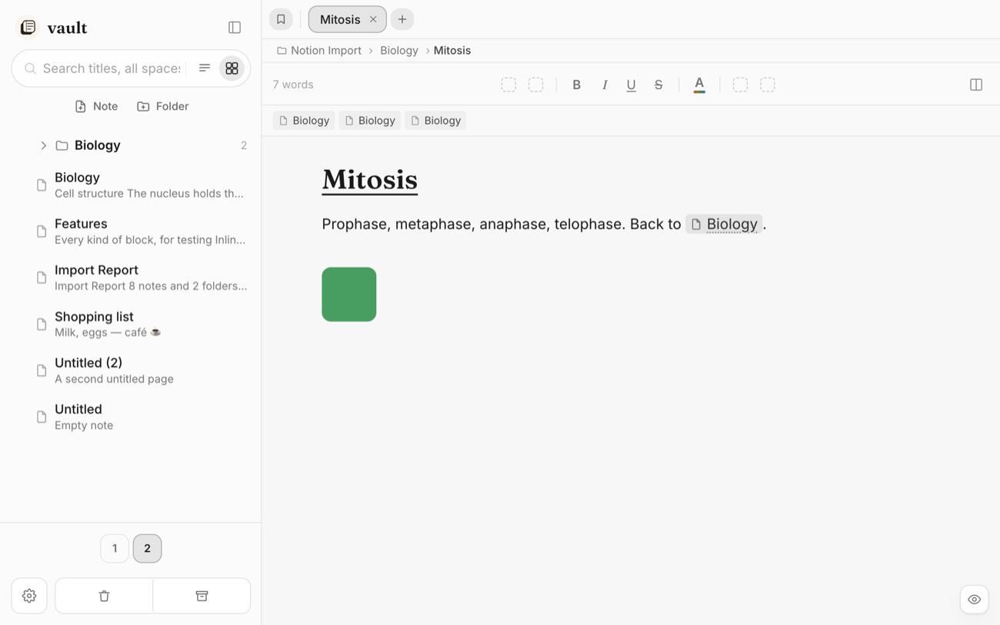
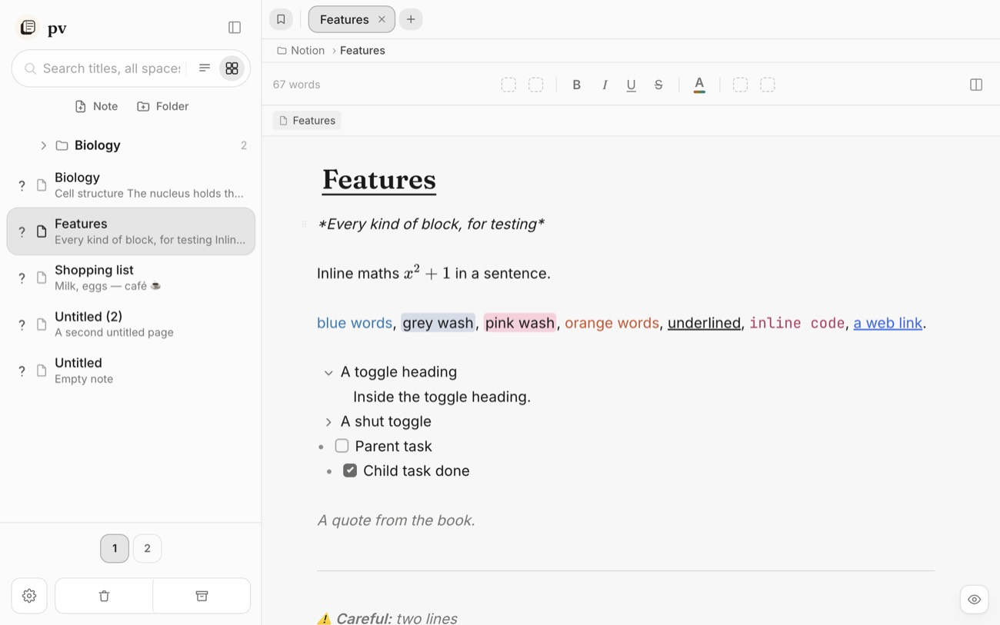
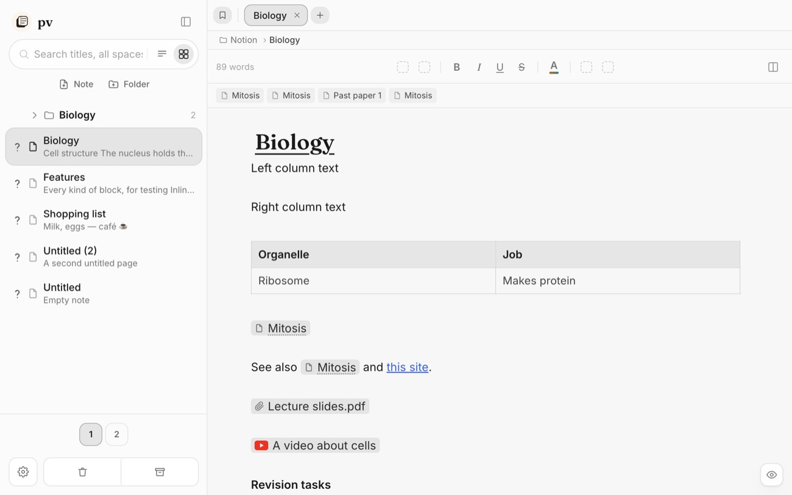
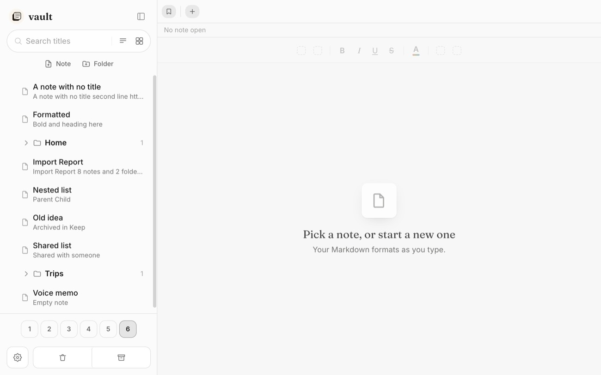
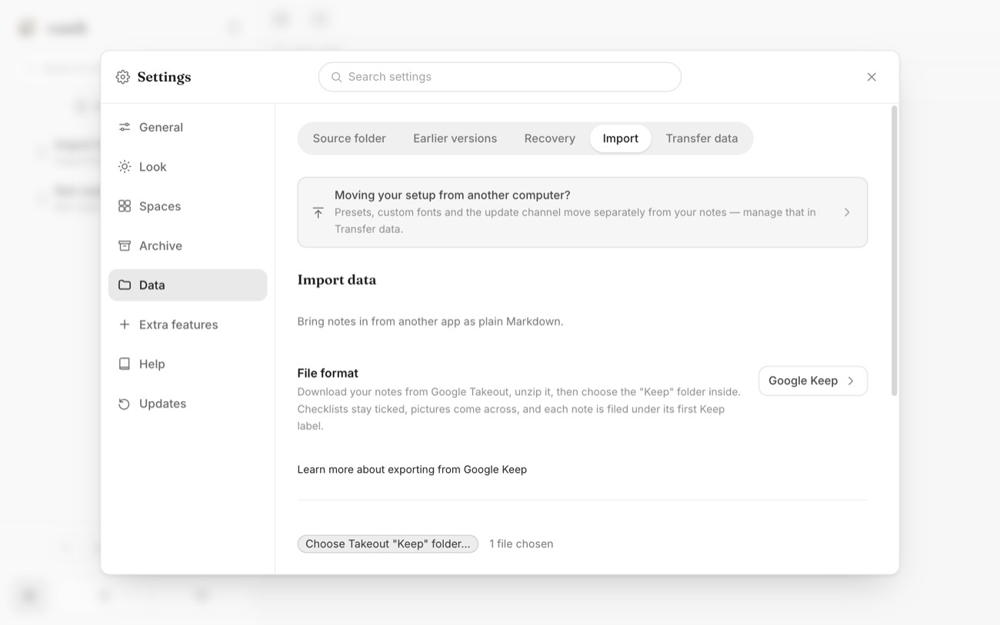
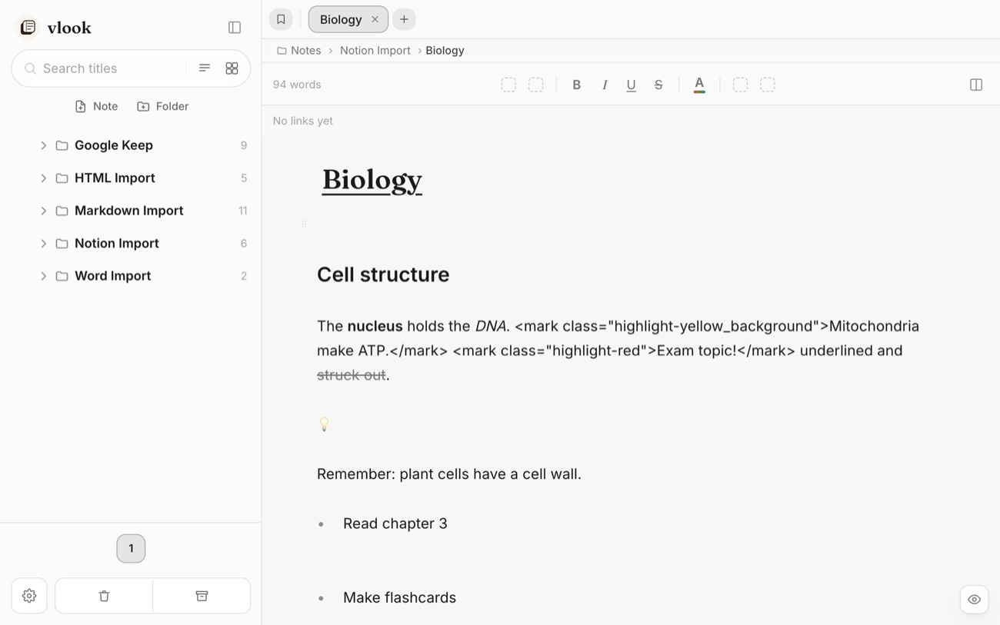
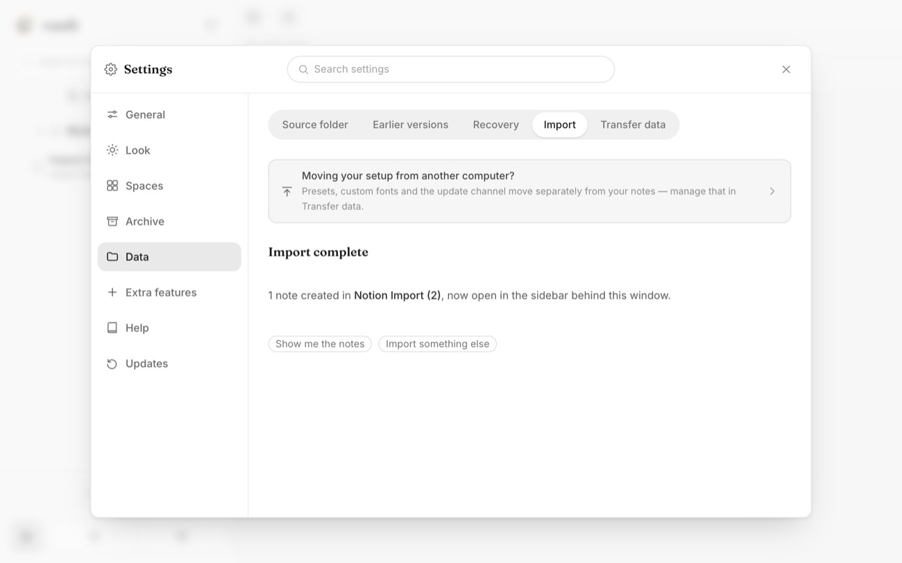
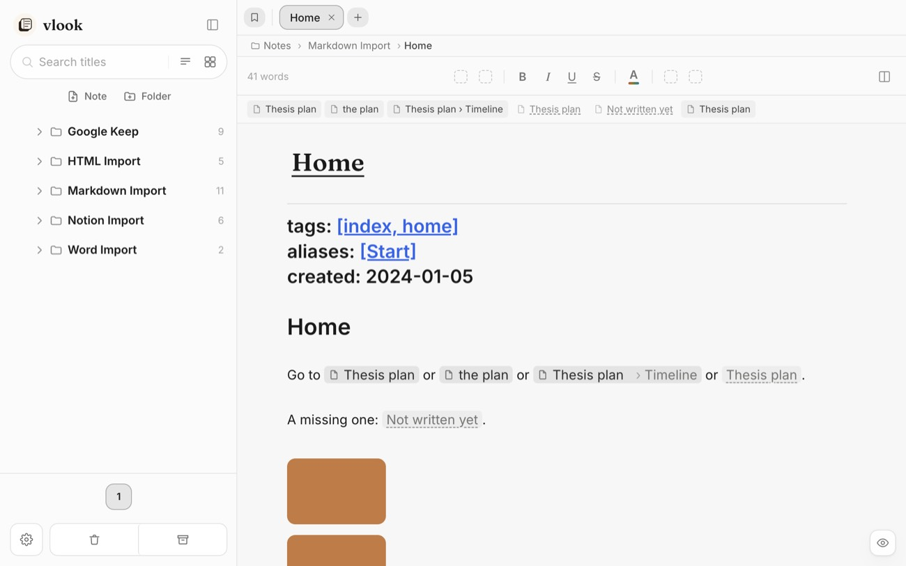
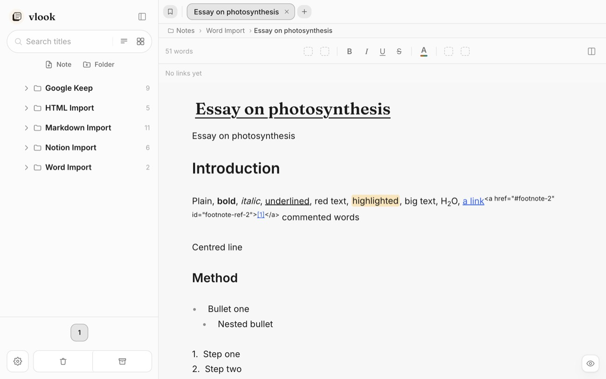

Seamless importing — and an easy way out
Started 16 Nov 2026 · Updated 20 Nov · Status: PARKED — "gotta focus on users atm"
Done = someone with notes in Notion, Apple Notes, Google Keep, Word, Markdown or web pages gets them in without reading instructions, sees honestly what didn't come across, and can take notes out just as easily.
New · 18 Nov — the converter is in the app
Choosing Notion in Settings → Data → Import now uses the new converter. The step's words now say to choose HTML when exporting from Notion.


How much bigger the app gets
| The converter | +9 KB |
| The libraries it uses | +0 — already inside the app for Word and web-page imports |
| The app as installed on your Mac | 311 MB, so +0.003% |
| For comparison: More accurate transcription | 550 MB — that's why it's a download |
What else changed
- The Import Report now lists what changed shape on each page (callouts, columns, toggle headings, the contents box).
- If one page can't be read the new way, it comes in the old way and the report says so. One odd page no longer stops the import.
- Import speed: the same as before, checked on 1,500 pages.
Checked: on a test copy of the app on the Mac with my hand-built Notion export, and every automatic check. Not checked: your real Notion export; Windows.
New · 17 Nov — can Notion come across properly? Yes.
I built a rough Notion converter outside the app and ran it on the test export. Then I opened its notes in a scratch copy of the app. Databases are left as the table Notion drew, as you allowed.


| Notion | Today | With the converter |
|---|---|---|
| Ticked boxes | plain bullets | ticked boxes, kept ticked |
| Toggles | bullets | the app's toggles, open or shut as left |
| Highlights and coloured words | raw code on the page | the app's own colours |
| Underline | lost | underlined |
| Maths | E\=mc2E = mc^2… | drawn maths, in the line and in boxes |
| Links between pages | file links, "No links yet" | the app's note links (they follow renames) |
| Bookmarks, YouTube | a broken link over seven lines | a link pill with its title |
| Callouts | emoji on one line, words on another | a quote that starts with its emoji |
| Columns | one after another | one after another (the app has no columns) |
| Speed | converting 1,500 pages takes under a second; saving them is what took the 27 s | |
What it can't do
- A callout's coloured box, a toggle heading's big size, columns side by side: the app has no such blocks. A real callout block would be a new kind of block — your call.
- Notion has 9 colours and the app has 10 different ones, so two pairs land on the same colour (orange and red → coral; brown and yellow → amber).
- If a page name appears twice in your notes (say, imported twice), a link to it can't tell which one you meant. The real version should write the folder into the link when that happens.
- Databases stay as the table Notion drew, with each row a linked note; their properties aren't carried.
How others do it
- Obsidian's own importer (free and open, MIT licence) reads Notion's HTML export and tells people to choose HTML. It finds the same Notion page code mine does, which is how I checked my test export is shaped right. It drops colours and turns toggles into plain lines, so ours would carry more.
- Notion's own connection (new this year): an app can read pages straight from your account, as text, with nothing to export or unzip. The catch: each person must make a key on Notion's site and paste it in. The alternative, a proper "Sign in with Notion" button, needs a small web server of ours. Pictures come as links that stop working after a short time, and very long pages get cut. Notion itself says personal keys aren't meant for an app many people use. Good later, not first.
Correction to yesterday: "the Markdown & CSV export brings in no pages" is doubtful. Your real export in August held web-page files even under that option, but other people report Markdown files. The converter should take both, and the on-screen step should say "HTML", as Obsidian's does.
Checked: on a test export I built to match Notion's real page code; in a scratch copy of the app on the Mac. Not checked: your real Notion export, Windows.
Open — needs you
- Real exports to test with. Export a small Notion workspace twice (once as "HTML", once as "Markdown & CSV") and download your Google Keep notes from Google Takeout; put the three downloads in one folder and tell me where. The Notion and Keep findings below come from copies of those formats I built by hand.
- Apple Notes. OK for me to run it once in a scratch copy against the real Notes app on your Mac? macOS will pop up a permission question; the notes go into a temp folder I delete after.
- Which directions to plan — A to E at the bottom of this page. D includes one that changes an earlier decision of yours ("every import makes a new space").
How I tried it
A scratch copy of the app on the Mac (not your test copy), real clicks through Settings → Data → Import, with an export from each app. Then I opened the imported notes and read the files that were written.
seen measured in the app. lead seen with a hand-made copy of that app's export — needs a real one to confirm. not tried Apple Notes; anything on Windows.
1 · Confusing

- seenAfter an import the screen says "No note open — Pick a note, or start a new one". Nothing opens, the Import Report isn't shown, the new space is a bare number. (The "organise" pop-up you ruled on in August was never built.)
- seenAt the window size I tested (1100 × 688) the Import button is below the bottom edge of Settings. The "Moving your setup from another computer?" box sits on top and pushes it down.
- seenYou have to say which app first, under "File format", in a menu listing "HTML" and "Markdown". Other words a switcher won't know: "Output folder name", "vault", "plain Markdown".
- seenAfter choosing a Notion .zip the screen shows
/var/folders/41/…/notes-import-8cd624ca80a8/level-1instead of the file's name. A chosen folder of 11 notes reads "1 file chosen". - seenA wrong pick isn't caught: the wrong folder for Google Keep reads "0 notes will be created", Import stays live, and pressing it says "Import complete — 0 notes created" and makes an empty space.
- seenEvery try makes another space ("Google Keep (2)", "(3)"…). At 15 spaces the next import is written to disk but never appears in the app — the screen still says "Import complete … now open in the sidebar".
- seenThe Import Report says "Nothing was skipped or lossy." after imports that lost things (section 2).
- seenWord takes files only — a folder of Word documents can't be chosen, and ".doc" / ".rtf" aren't offered. Google Keep makes you unzip the download yourself.
- seenOne over-long name stops the whole import: "That name is too long — try something shorter, or a shallower folder." Seen in a deep test folder; Notion's 32-letter codes on every name make it likelier. Whether a half-made space is left behind: unchecked.
- seenA Word file that can't be read leaves a note quoting
Can't find end of central directory : is this a zip file ? … jszip.

2 · Loses something
Notion lead

- The on-screen step may send people to the wrong export. It says choose "Markdown & CSV". With an export shaped that way (.md files) no page came across — "1 note created", an empty index, "Nothing was skipped or lossy." The importer only reads the web-page kind.
- Tick-box lists arrive as plain bullets. Toggles become bullets. A callout splits into an emoji line and a text line.
- Highlights show as raw code:
<mark class="highlight-yellow_background">. Underline is dropped. - A formula arrives as
E\=mc2E = mc^2E\=mc2. A web bookmark becomes a broken link spread over seven lines. - Links between pages work but aren't the app's own links. Every note starts with a stray empty line; pictures are wrapped in a link.

Markdown / Obsidian seen

- The properties block at the top shows as a huge heading.
- Shown as raw text:
==highlight==,%%comment%%,> [!note]callouts, footnotes,#tags,![[a note]]. - A link written with its folders (
[[Projects/Thesis/Thesis plan]]) shows as a missing note. lead .canvasboards are left behind with no mention. A file saved by an old Windows editor arrives with "�" for every accent, no mention.- Came through fine: folders, pictures (including Obsidian's
![[pic.png]]), tables, formulas, tick boxes, dates.
Web pages (HTML) seen
- A site's menu and footer come in as text ("Home | About", "© 2019 … Cookie settings").
- A link from one imported page to another copies the .html file into your notes folder instead of linking the note.
- Tick boxes lose their boxes; coloured and highlighted words go plain; a picture stored inside the page becomes one enormous line of code; an old-Windows page's title arrives as "Caf� notes".
- The report fills with noise:
Local reference "/" could not be copied.
Word seen

- Gone with no mention: words in a text box, an equation, a comment, the page header, text colour, large text, centring.
- A footnote mark shows as raw code:
<a href="#footnote-2" id="footnote-ref-2">[1]</a>. The "Title" style arrives as ordinary text. - Came through fine: headings, bold / italic / underline, highlight, H₂O, lists, the table, the picture, the link.
Google Keep lead
- Fine: ticked checklists, labels as folders, the Bin skipped, pictures.
- Not carried and not mentioned: pinned, archived, note colour, who it was shared with.
- A Keep voice recording arrives as "This recording can't be played here" with a "Make a playable copy" button.
Apple Notes not tried
It reads your real Notes app, so I left it (ask 2). Known from the code: pictures stay behind and locked notes can't be read.
3 · Slow
| What | Reading it | Importing |
|---|---|---|
| 2,000 Markdown notes in 40 folders | 0.3 s | 21 s |
| A 1,500-page Notion .zip | 0.9 s | 27 s |
seenNot slow. Not tried: an export of several GB with thousands of pictures.
4 · The way out
Read in the code, not re-run today. Save as… and Print… work on one note at a time, as a PDF or a web page. There is no way to save a folder or a whole space in one go, no Word, and no "show my notes folder" on a right-click.
Directions — nothing planned yet, pick from these
- One door. One "Bring notes in" button — or drop a file, folder or .zip on the window — and the app works out which app it came from. No "File format" menu.
- Look before it lands. After choosing, you see three of your notes as they will look and a plain list of what won't come across — before anything is written. A wrong pick or zero notes says so and stops.
- Fix what gets lost, app by app (ticks, highlights, toggles, the properties block, text boxes…), and make the report honest.
- Land well. After importing, the first note opens, the space gets a name, and a short "here's what came in" card shows; an "Undo this import" button; never a silent 16th space. Optional: "into a space I already have" — this changes your August ruling that every import makes a new space.
- An easy way out. "Save as…" on a folder or a whole space: one PDF, a folder of PDFs or web pages, or Word files; "Show in Finder" on any note.
Checklist
☑ try each import and list what's confusing / slow / lost · ☐ your picks · ☐ plan · ☐ build · ☐ checked on the Mac · ☐ Windows · ☐ shipped